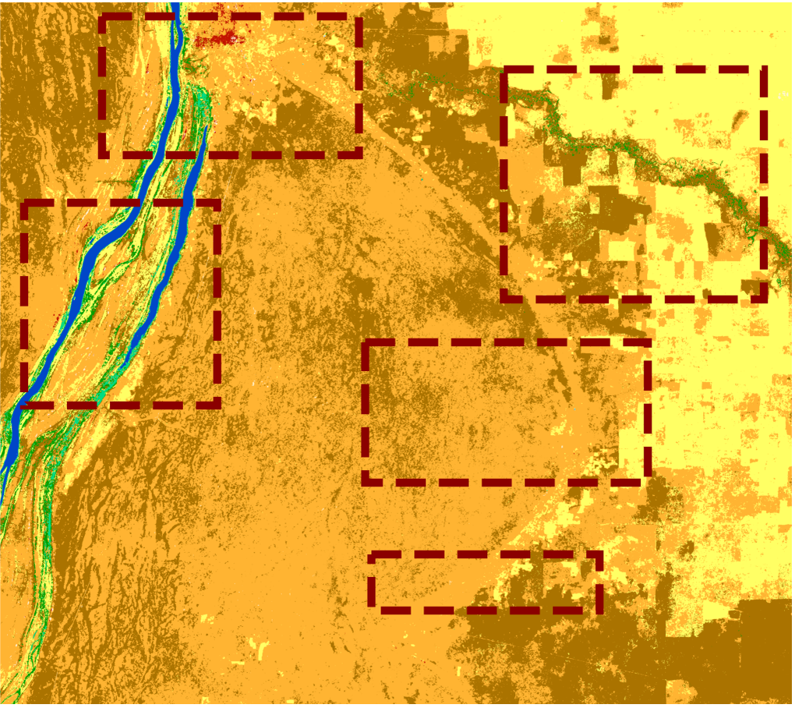
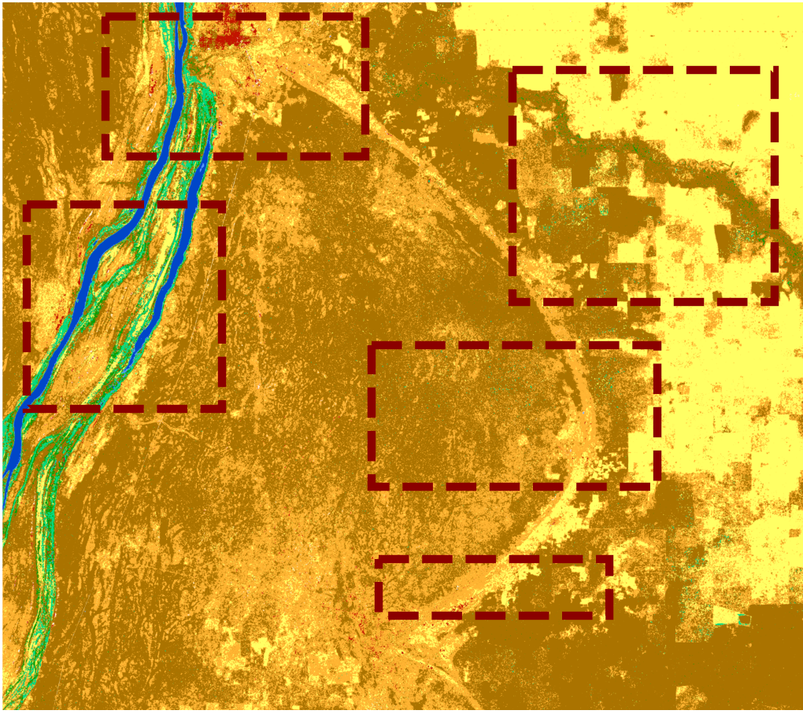

Why a new decision fusion chain?
Why land cover?
Land cover is an Essential Climate Variable. The African Sahel is heterogeneous and changes rapidly under climate change, so high-resolution maps are needed for resource management and climate-change mitigation.
The baseline
ESA CCI+ High Resolution Land Cover maps land cover at 10–30 m every five years from 1990 [1]. Its Phase 1 (P1) decision fusion confuses spectrally similar classes, over-smooths small structures and links dates only pairwise.
Our goal
One decision-level fusion chain for multisensor, multitemporal and spatial fusion, replacing the P1 chain. Inputs are yearly pixelwise posteriors from optical and SAR classifiers.
Three modules, one chain
PSMLP: Pseudo-Siamese multilayer perceptron
Two parallel MLP branches process the optical and SAR posteriors. Their outputs are concatenated, then a fusion layer and a softmax give the fused posterior (late fusion). A neural network can learn non-linear cross-modal dependencies.
HMM: temporal consistency
Forward–backward inference [2] over the whole time series gives temporally harmonized posteriors. α is the forward and β the backward probability, and class-transition probabilities link consecutive years.
Contrast-sensitive CRF: spatial regularization
The energy combines a unary term from the PSMLP output with a pairwise term over the four-connected neighbours [3, 4]. The RBF kernel K compares the posteriors of neighbouring pixels: near an edge it tends to 0, which reduces smoothing; in uniform areas it tends to 1, which promotes smoothness.
A challenging Sahel tile, 1990–2019
Sentinel-2 tile 36PVT (110 km × 110 km). Multitemporal processing at 30 m: Sentinel-2/-1 for 2019, Landsat, ASAR, ERS-1 and ERS-2 for earlier years. Each module is compared with its P1 counterpart: consensus-theory fusion, spatial MRF and the Bayesian cascade.
- 7 years: 1990, 1995, 2000, 2005, 2010, 2015, 2019
- Split 70 / 10 / 20 %
- SGD, lr 0.01, momentum 0.9
- Dropout 0.5
- Weight decay 10⁻⁴
- 50 epochs, batch 64
Multisensor fusion, 2019
Overall accuracy rises from 65.26 % (P1) to 92.83 % with the proposed fusion.
- Tree-Dec-Broad F1: 0.23 → 0.72
- Bare: 0.25 → 0.92
- Flood-Grass: 0.46 → 0.98
- Built-up (1.00) and Water-Perm (0.90) are on par.
The network learns non-linear decision boundaries that overcome the spectral confusion of the P1 model, which relied on expert class weights.
Temporal consistency, 1990–2019
The P1 cascade works on pairs of dates; the HMM considers the entire timeline at once. Select a year to compare the confusion matrices.
Spatial regularization, tile 36PVT
Drag the handle to compare the proposed CRF with the P1 MRF.


Proposed CRFP1 MRFCRF keeps detail
Small settlements, transitional vegetation between cropland and shrubland, and aquatic vegetation along river networks survive regularization.
MRF over-smooths
The P1 product over-smooths the centre of the tile for both shrubland types and erodes narrow rivers and small settlements, more so at higher regularization weights.
What we learned, what comes next
Result
PSMLP + HMM + CRF outperforms the P1 chain on the same data and study area over a 30-year satellite image time series.
Limits
Spectrally similar vegetation classes remain hard for both chains, and supervised fusion needs labelled training data, which can be scarce.
Next
Other regions; GRU, LSTM and Transformer sequence models; multiresolution fusion at the native resolution of each source.